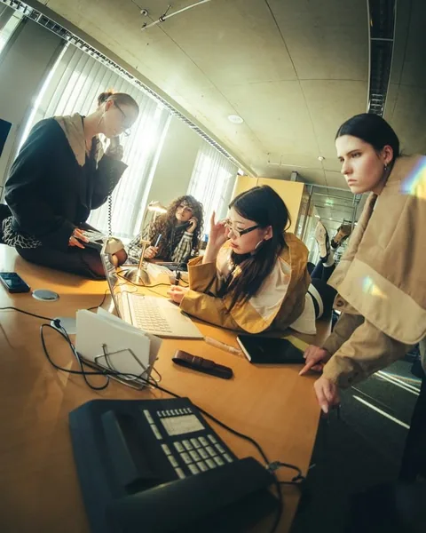
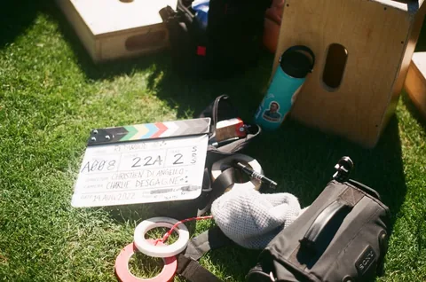
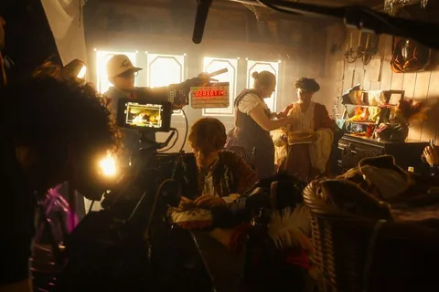
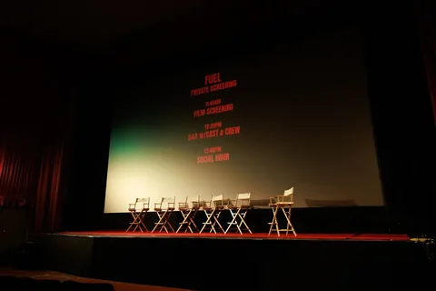

Story Development
We shape your idea into a script, treatment, and pitch ready for financing.
Explore →
We shape your idea into a script, treatment, and pitch ready for financing.
Explore →
We plan casting, locations, budget, and schedule so every shooting day runs on time.
Explore →
Our crew captures your story with intentional direction, cinematography, lighting, and clean sound.
Explore →We cut, grade, and mix the footage into a finished film with its own score.
Explore →
We add subtle VFX and cleanup that support the story without drawing attention.
Explore →We master, subtitle, and package your film for festivals, cinemas, and streaming.
Explore →